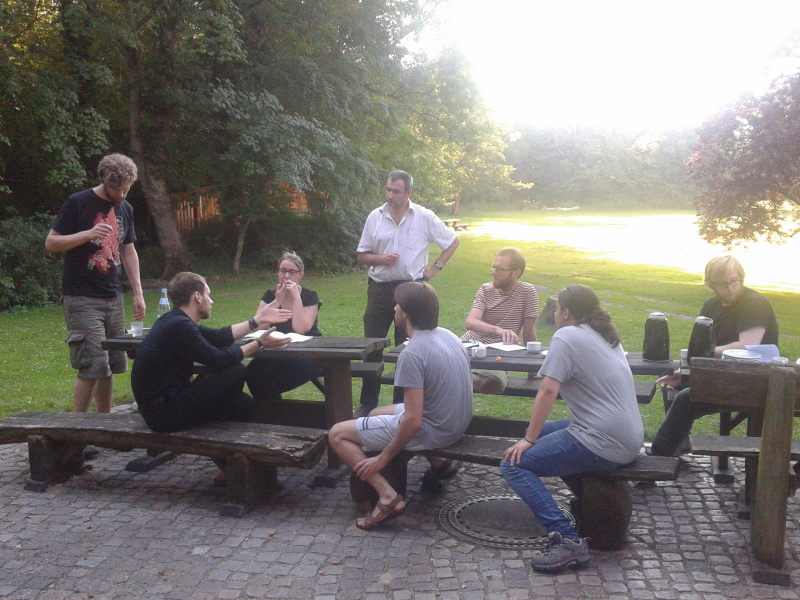
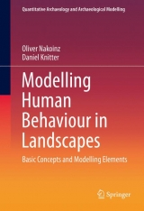

Mosaic
Modelling Spheres of Intercation
Franziska Faupel, Daniel Knitter and Oliver Nakoinz
Summer School 2016
Organisation
- Franziska Faupel
- Carl Evers

Reconstructing and Modelling Early Iron Age Systems of Interaction and Distribution


Mosaic | Modelling Speheres of Interaction

International Center
Guest Lectures
Loup Bernard
James Allison
Aleksandr Diachenko
Daniel Knitter
- SS 2013 (Noer)
- WS 2014 (Berlin)


MOSAIC - Modelling Speheres of Interaction
Aims
- understand concepts
- adapt methods and techniques
- connect to experts
- establish a community
- develop a scientific network
- collaborative projects of participants
Some usefull information

Timetable

Interaction between Humans and Landscape
Jutta Kneisel

Presentations
Monday, 5th of September
Tuesday, 6th of September
Wednesday, 7th of September
- Modelling Interaction: Cultural distances
- Workshop: Geographical and Economic Distances
- [Workshop: Cultural Distances]
Thursday, 8th of September
- Using network approaches to modell Interaction
- [Workshop: Pointpattern Analysis]
- [Workshop: Network Analysis]
Needed Packages
vioplotggplot2smrgdalraster-
sp rgeosmaptoolsproj4gstat
foreignshapefilesplyrRSAGAMatrixspdepnlmerpartspatstatigraphRANN
Install Packages from a local directory
In case the internet connection is not stable enough, you find all needed packages on your flash drive. Please adapte the follwing code to your needs.
install.packages("ggplot2", lib="path to flash drive or local dir/Rpackages/")
library(ggplot2, lib.loc="path to flash drive or local dir/Rpackages/")
MOSAIC - Modelling Speheres of Interaction
Aim
This Summer School focuses on interaction as a key concept in social life, and on methods for reconstructing and modeling spheres of interaction at different spatial and temporal scales. Students will learn an innovative approach, used in recent studies, for modelling spheres of interaction. The course will cover a variety of theories and concepts that will enable students to apply this method to further regions, material groups, and time periods. The course is divided into individual lessons presented by experts, thus providing a diverse overview of approaches.
MOSAIC - Modelling Speheres of Interaction
About Mosaic
At Kiel University there is a growing interdisciplinary community which strives to establish an integrative concept and culture of modelling. The intention behind Mosaic is to convey the Kiel spirit of interdisciplinary modelling and to facilitate knowledge transfer on basic theories, methods and techniques in spatio-temporal modelling. In this summer school we will introduce participants to the basics of modelling, mathematics, trends, boundaries, movement, interaction and networks.